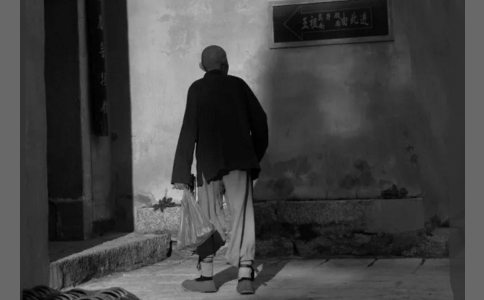

昨日凌晨，听说老和尚走了。
第一次见到老和尚，是2014年10月，湖北省讲经交流会之前，我经过五祖寺毗卢殿门口，忽然看见一个拄拐杖的瘦瘦的老和尚，我就远远地躬身合十行礼，老和尚走过来，和蔼地跟我讲话，问起这次讲经交流的安排。
我猜，莫非这是传说中的照勤老和尚，一问，果然是，赶紧顶礼。在殿门口台阶处，老和尚不问自说，径直跟我谈起了修行。
不观色，眼睛一观，六根六尘都动了，心就有了杂念。人人都有如来自性，人人皆具如来智慧德相，就是杂念太多了，杂念不能控制。放下放下再放下！放下万缘！
我86岁了，修禅养身养心，本焕活106，
现在很多寺庙都在搞经济，搞名气，迷失了。自性若是迷失了，福报怎么救得了你。出家人要晓得用功，要知道自己吃的哪行饭，吃了十方的供养，不修行，消不掉。真正修行在禅堂在
学生骗老师是骗不住的，你有没有修行，哪怕心念动一下老师就知道了，骗不了人。捏着鼻子哄眼睛，那就自己哄自己。学生哄老师哄不到，佛菩萨哄不到，你搞一天巧，佛菩萨都晓得。你心一动，他就知道，你还在他面前玩花样，你在孔夫子面前卖字啊，鲁班门口耍斧头啊。直心就是道。跟做功德是两码事。
了生死，不到这个社会上来，我们这个社会有互相残杀，有勾心斗角。你吃他的肉，他吃你的肉。为什么和尚不吃肉呢？慈悲是一方面，好东西吃多了是要还的。欠命债还命债，欠钱还钱，因果循环没有客气的。所以勾心斗角，你当正的我当副的，把正的弄下台。
众生有强有弱，软弱众生猪啊狗啊，牛啊鸡啊，多了，飞禽走兽，胎生卵生湿生化生，转
学佛的，求福德，不能了生死。舍衣得衣，舍钱得钱。上上人有没意智，下下人有上上智，聪明糊涂，糊涂聪明，聪明反被聪明误。聪明当三分傻，眼睛当瞎子，耳朵当聋子，欺负人家是欺负自己，骂人家是骂自己。
禅宗说，难看要看，难吃要吃，难听要听。老朽穿衲袄，淡饭腹中饱；补破好遮寒，生死
第二次跟老和尚说话，我和同事路鹏杰、丁典又是在毗卢殿门口遇到他。老和尚很和蔼，让人很想亲近。后来，我们去了他所住的真身殿旁的院落里。老和尚没有一点架子，平实的像是邻家的爷爷。我们坐在小板凳上，围在老和尚身边听他讲故事。
菩萨想考验
过去，梁武帝很信佛，到处访贤，一访访到志公禅师。志公禅师不是一般的人，是悟了道的。梁武帝就把他接进皇宫里供养。有一天梁武帝想请志公禅师看戏，名角们怕在皇宫丢丑，都把自己最拿手的好戏拿出来，衣着打扮都非常光鲜精神。
戏开始了，梁武帝和志公禅师坐在中间，文武大臣也都来了保在两边。唱戏的都很卖力气，唱的好。戏演完了，梁武帝说，师父啊，今天的戏唱的真好，唱花脸、武生，旦角唱的真是好，师父认为谁唱的最好。志公禅师说我没看啊。梁武帝一下子愣住了，不知道该怎么说了，然后有些不高兴。这时一个大臣说到，老和尚呀，出家人不能打妄语啊，你明明坐在正中间怎么能说没有看。志公禅师回答说，不错，出家人不打妄语。我们出家人，生死事大，一天到晚用功办道都来不及，那里有功夫来看戏！我的确没看，这样吧，你们要是不相信，可以把犯了死刑的犯人找一个来，还是这班人，还是这样唱，也让他来看。
梁武帝就叫人带了一个犯了死罪的人来，跪在台前看戏。志公禅师说你得答应我一个条件，让他双手捧一盆水，如果戏结束了水一滴不洒就当场无罪释放，如果洒了一滴，立马人头落地。梁武帝答应后，就让犯人坐在正中间捧着一盆水睁大眼睛看戏，两边的侍卫拔着刀看着他。戏结束了，问犯人唱的什么戏，刚刚的戏唱的怎么样？他说：“吾皇万岁！我哪有心思去看那些事情，我要稍不注意，头就要掉了。”梁武帝一听才相信了，修行人原来是这么样的认真。自此以后，梁武帝对志公禅师更是倍加恭敬供养。
人世无常，生命就在呼吸间。生死大事，我们的花花世界最容易让人遗失路途。就像唱戏一样，戏唱的是假的，人也是假的，快乐的欲望也都是假。出家要出个真家，要晓得修行，要一心的修行，出家可不是开玩笑。
你们晓不晓得，
我们这个世界就叫
以前乾隆皇帝游江南，来到镇江金山，看到长江里船来船往，问一个老和尚：“老和尚，你看这江上，每天来往有多少只船？”老和尚说：“两只船。”乾隆很惊奇，问：“这是什么意思？”老和尚说：“一条为名船，一条为利船！”
我们
2014年12月6日，正慈师父升座那天，我和路鹏杰陪河北省佛教协会副会长常辉法师去拜访老和尚。老和尚出来了，还有那几条院子里的狗也凑过来了。
老和尚说：“这狗前世是这庙里的出家人，因为错了因果，今生投胎，投了狗胎，还在寺院待着。像上个厕所的事情，都替代不了，每个人的生和死，别人都替代不了。”
信众给他的供养，他都用来
常辉法师当时对我们说，要把老和尚的话记下来啊。现在，老和尚走了，我们再也看不到他了，只能看这些记下来的话了……
文章转自微信公众号：山里人正慈